Unlock Keychain, then use Open filled for Staff / Student desks. Confirms the one-place Demo login hub.
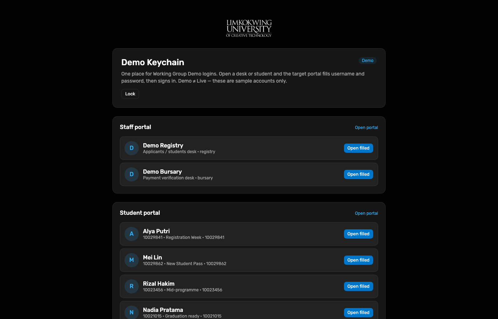
Working Group · End-to-end Demo test
Hosted Demo walkthrough executed on 11 Oct 2026 with step screenshots. Demo ≠ Live — sample Neon / Portal API state only.
The Demo completed scenario starts as a draft ready to submit (fee step with bank reference + payment.pdf).
After submit, Staff Bursary sees pending verification, runs
Approve payment → enrol student, and the applicant card becomes
Enrolment Accepted. The promoted Demo student path continues as Alya Putri in the Student Portal.
| Surface | URL | Account used |
|---|---|---|
| Demo Keychain | raisd-keychain.vercel.app | Master unlock (WG only) |
| Applicant Portal | raisd-applicant-portal.vercel.app | Scenario completed (Draft ready to submit) |
| Staff Portal | raisd-staff-portal.vercel.app | Bursary desk bursary |
| Student Portal | raisd-student-portal.vercel.app | Alya Putri 10029841 |
| Portal API | raisd-portal-api.vercel.app | Staff RPC queue / enrol |
Passwords are not published here. Use Demo Keychain (Open filled) or the WG credential note.
Unlock Keychain, then use Open filled for Staff / Student desks. Confirms the one-place Demo login hub.

Select scenario Draft ready to submit (completed) and sign in through Portal API Demo auth.
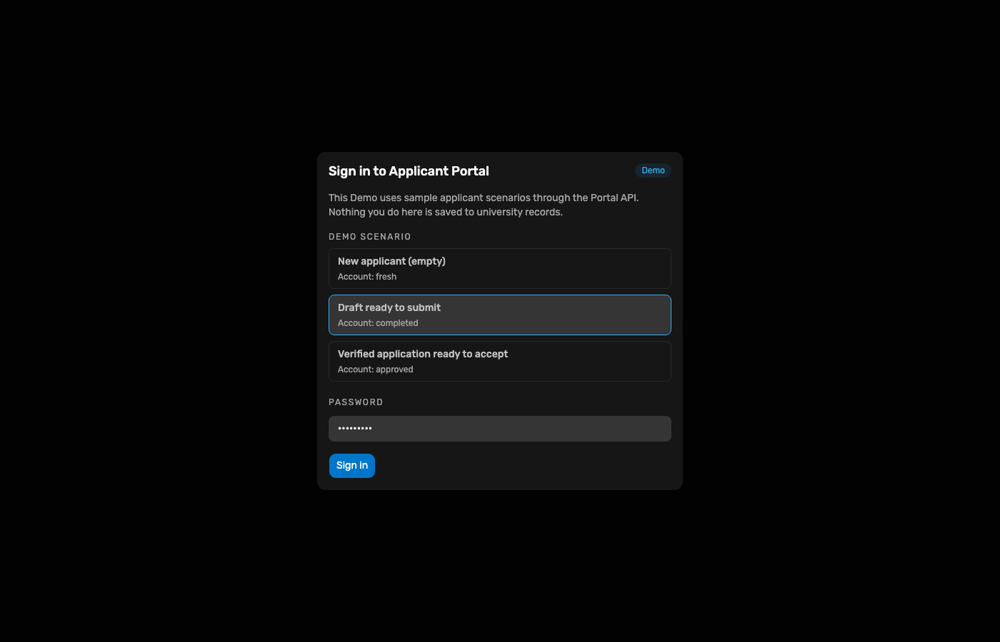
My Applications shows the draft card (not yet submitted).
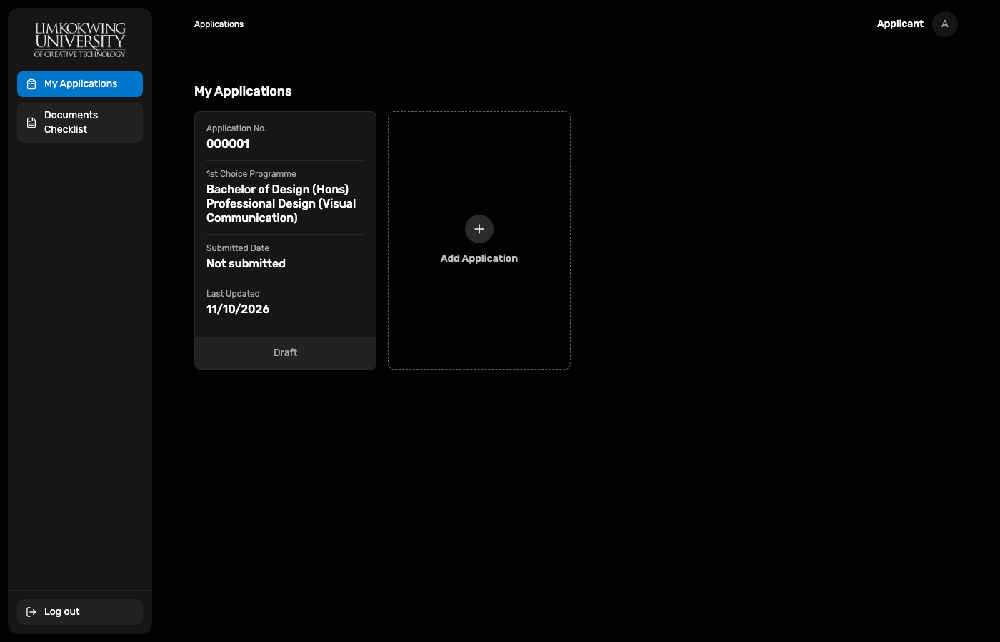
Step 6 of 6 — bank transfer details, reference DEMO-REF-1, proof payment.pdf. Submit Application opens confirmation.
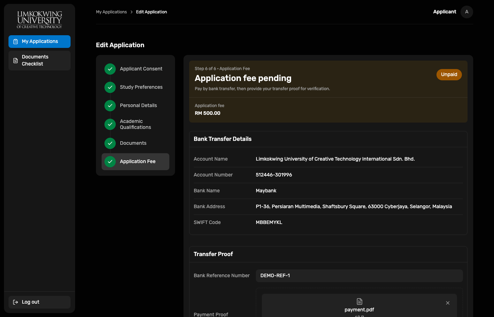
After confirm, status becomes Payment Proof Under Review (submitted 11/10/2026).
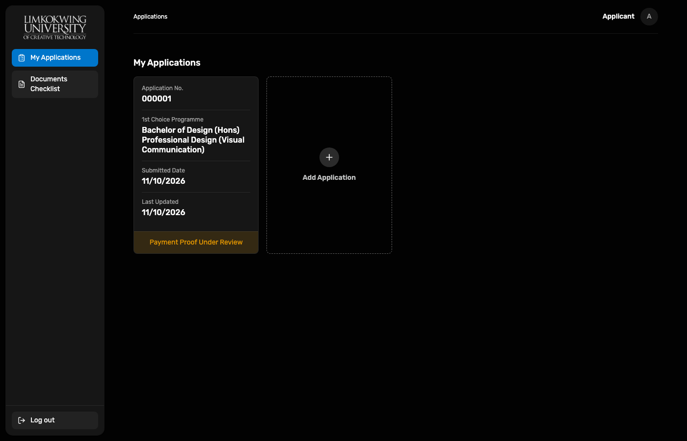
Opened submitted view while awaiting Bursary.
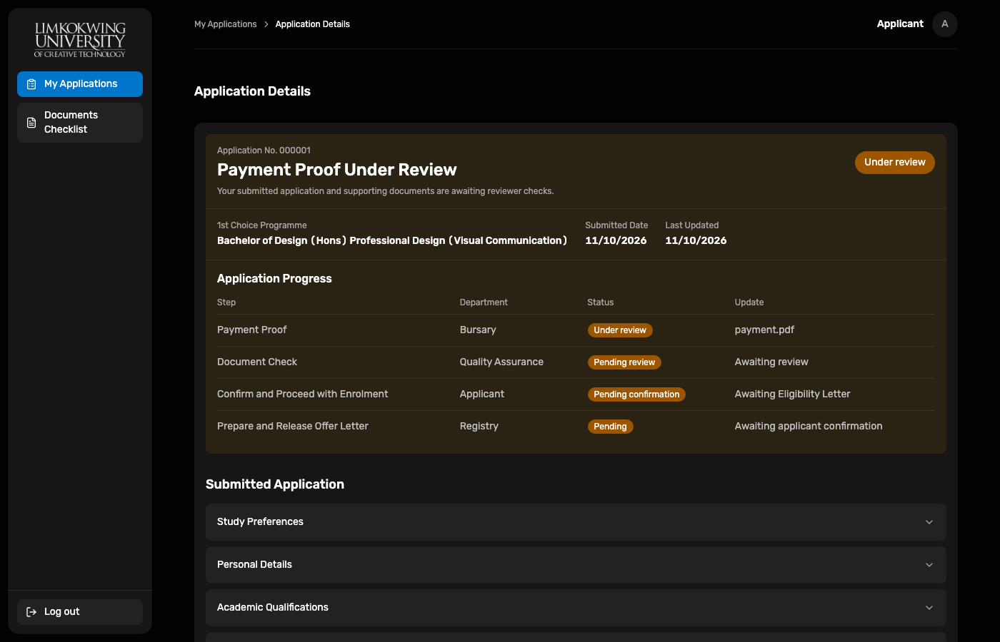
Bursary desk username filled; Demo ≠ Live banner visible.

Live Demo queue from Portal API. Demo Draft Applicant is pending verification; approve control enabled.
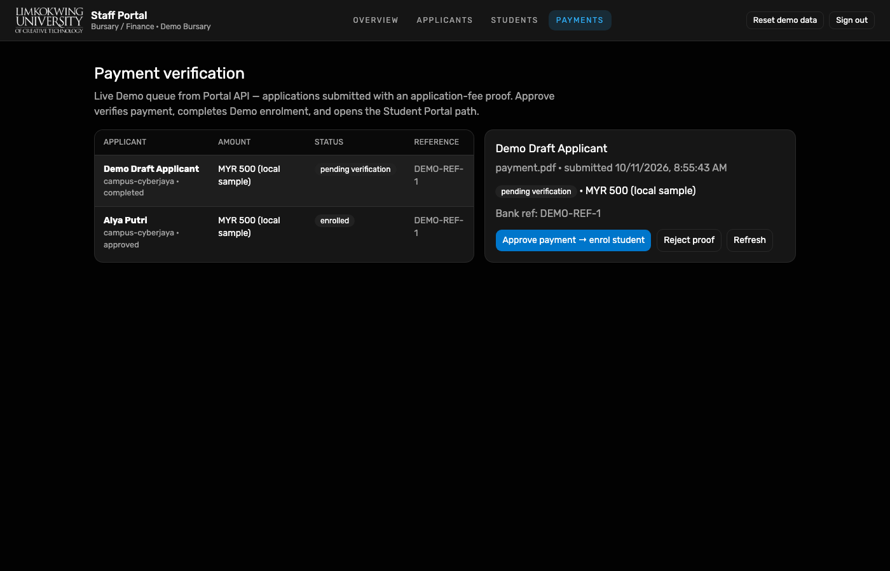
Success banners: payment accepted, documents verified, enrolment accepted. Continue as Alya Putri (10029841). Queue status for Demo Draft Applicant is enrolled.
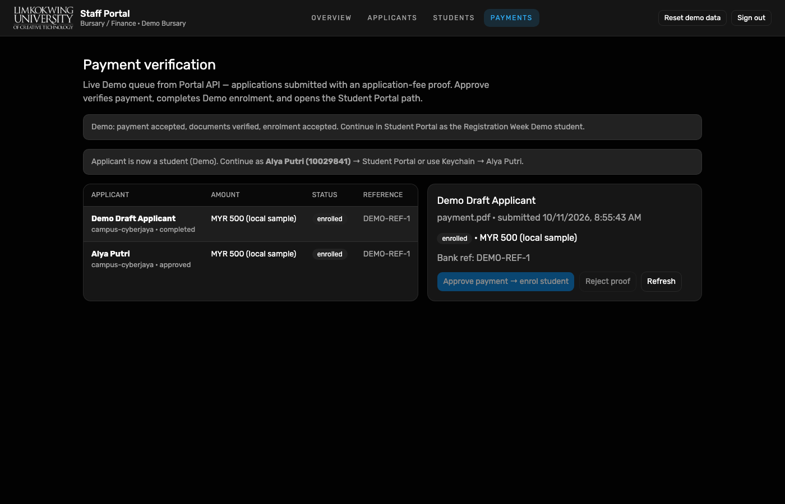
Re-opened Applicant Portal as the same completed scenario; card status is green Enrolment Accepted.
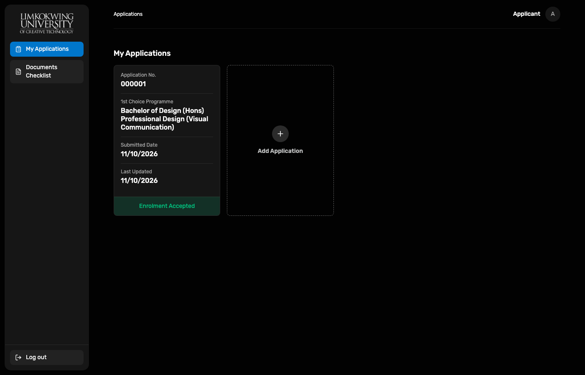
Registration Week Demo student Alya Putri 10029841.
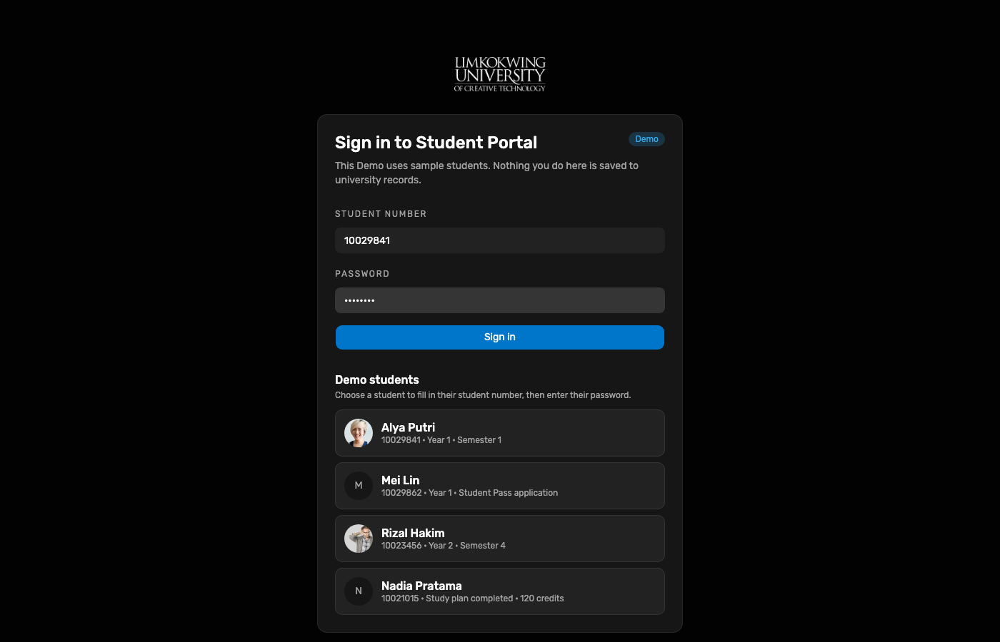
Dashboard loads for Alya with programme context, announcements, and Registration Week action cue.
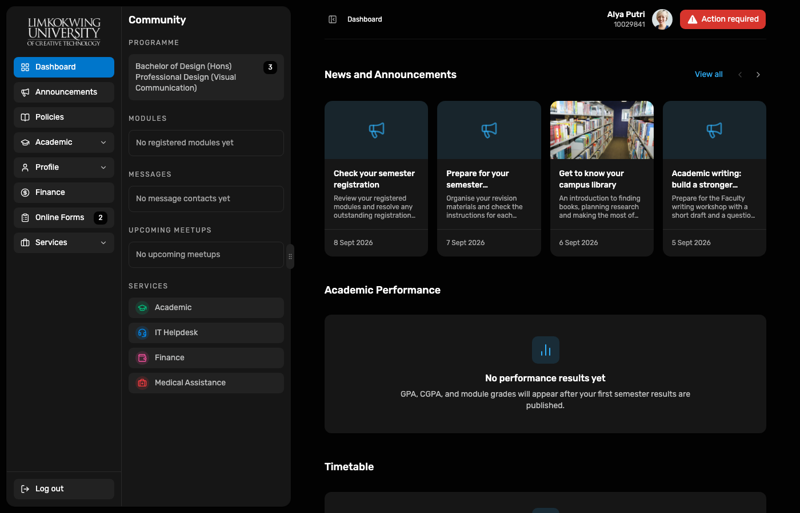
completed → Resume draft → fee step → Submit Application → Confirm.10029841 → Dashboard.
Capture script (local): node docs/reports/e2e-applicant-staff-enrol-2026-10-11/capture.mjs
(requires Playwright Chromium from applicant-portal and gitignored .credentials/demo-*.json).